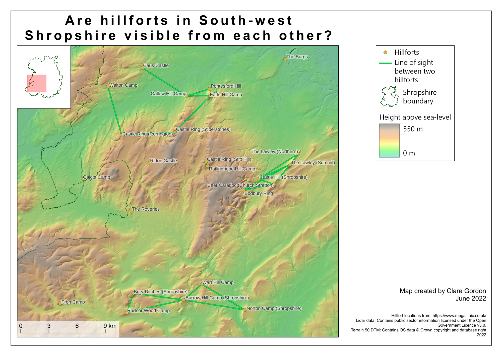

Original hillfort kml download from Megalithic Portal search. Had to inspect data and move some hillfort points to highest point of hillfort according to the Lidar data. Is there a way of doing this automatically?
Height data is merged from 2 m lidar with OS Open data Terrain 50 to fill the gaps.
gdalbuildvrt to fill gaps in one raster with data from another.Resampling > Zoomed in to Bilinear to remove line effect in close up. I should see what the possibilities are when generating actual hillshade layers too.Was expecting there to be quite a lot of lines of sight between hillforts, though that was just a guess. In the event, there aren’t many. Maybe there are/were many more hillforts than in the list on Megalithic Portal?
Possible sources of more information
Jukes talks about forts being in clusters, or almost family groups (find page numbers?). Could I do some form of cluster analysis on the data?